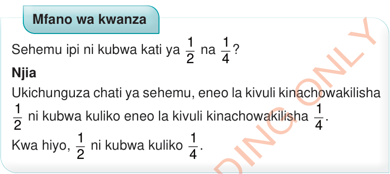
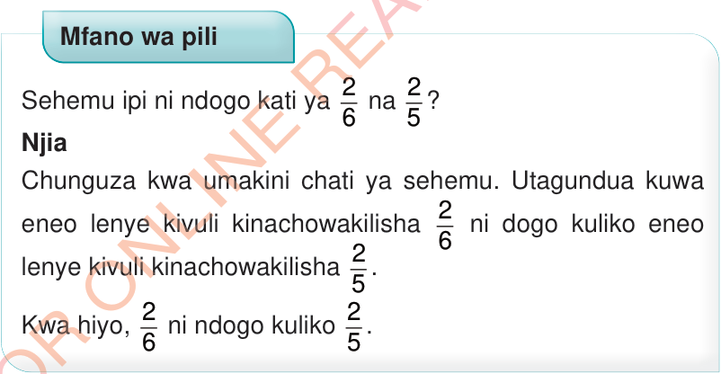

Katika chati ya sehemu, eneo lililotiwa kivuli huwakilisha ukubwa wa sehemu husika.
Hivyo, urefu wa kivuli katika mchoro wenye sehemu unaweza kutumika kulinganisha sehemu.

Mfano wa kwanza
Sehemu ipi ni kubwa kati ya 1/2 na 1/4?
Njia
Ukichunguza chati ya sehemu, eneo la kivuli kinachowakilisha 1/2 ni kubwa kuliko eneo la kivuli kinachowakilisha 1/4.
Kwa hiyo, 1/2 ni kubwa kuliko 1/4.

Mfano wa pili
Sehemu ipi ni ndogo kati ya 2/6 na 2/5?
Njia
Chunguza kwa umakini chati ya sehemu.
Utagundua kuwa eneo lenye kivuli kinachowakilisha 2/6 ni dogo kuliko eneo lenye kivuli kinachowakilisha 2/5.
Kwa hiyo, 2/6 ni ndogo kuliko 2/5.